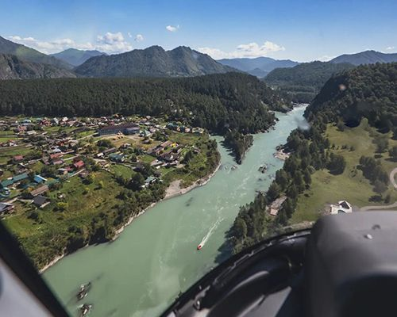
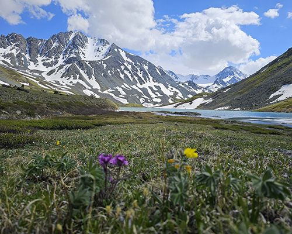
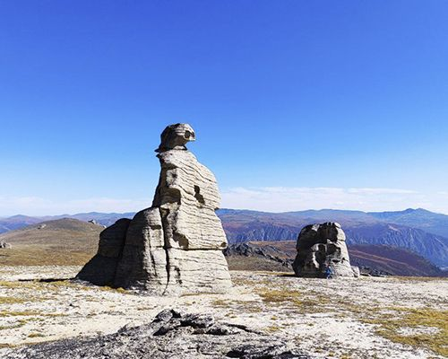
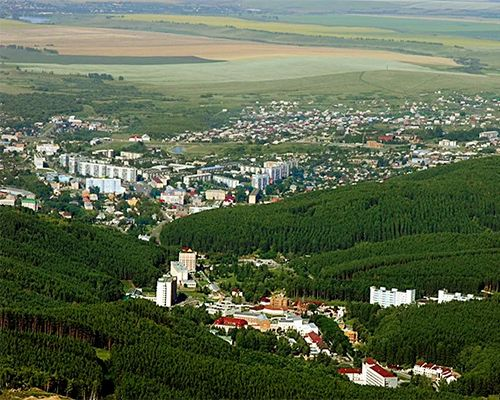
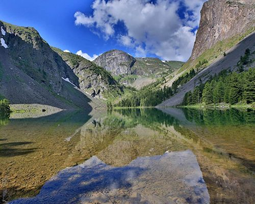
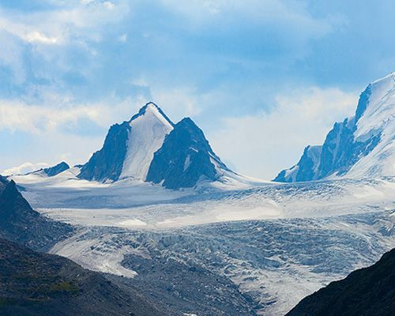
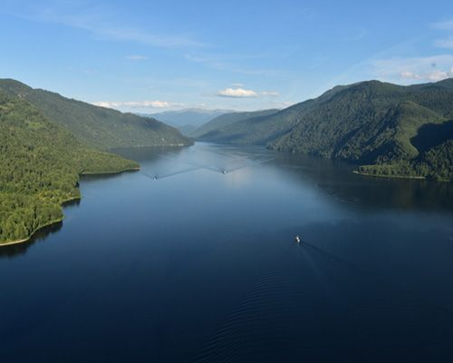
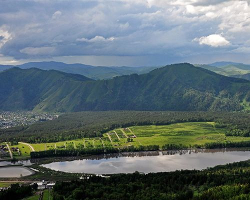

Посадочная площадка «Карасук» · 51°33′36″ N 85°55′03″ E
На Алтае сейчас --:--
Входим в группу компаний Premier Avia

Начало и завершение маршрутов — на посадочной площадке «Карасук», с. Чепош, Чемальский район.
Цена «от» — за полёт на Eurocopter AS350 (до 5 пассажиров). Для групп доступны МИ-8АМТ и МИ-171.

⏱ 15минВы увидите живописные виды Алтайской природы, «каменные зубья дракона», бурлящие пороги реки и пролетите над горными хребтами.
 ⏱ 30мин
⏱ 30минКрасавица Катунь завораживает взгляд в любое время года.
 ⏱ 2ч 50мин
⏱ 2ч 50минГора Белуха — высшая точка Катунского хребта (4506 м), священное место всех алтайцев, рядом с которым, по поверьям, находится вход в легендарную страну Шамбалу.
 ⏱ 3ч 15мин
⏱ 3ч 15минГора Белуха — высшая точка Катунского хребта (4506 м) и высочайшая гора Сибири, священное место всех алтайцев, рядом с которым, по поверьям, находится вход в легендарную страну Шамбалу.

⏱ 2ч 30минКалагашские озера — труднодоступные высокогорные озера, которые находятся на высоте 2236м.

⏱ 3ч 10минУрочище Чокпартас — это высокогорное плато с высотами от 2400 до 2700 м над ур.
 ⏱ 2ч 55мин
⏱ 2ч 55минВ горной цепи Северо-Чуйского хребта, на высоте 2150 м, расположено ущелье Актру.
 ⏱ 3ч
⏱ 3чПолет по акватории Телецкого озера, над водопадами, горными вершинами, многочисленными реками, впадающими в Алтын-Кёль.
 ⏱ 2ч 30мин
⏱ 2ч 30минОзеро Тальмень (Тальменное) — самое крупное в верховьях Катуни, расположено на высоте 1 570 м, на южном склоне западной части Катунского хребта.
 ⏱ 3ч 20мин
⏱ 3ч 20минВ 2017 году Шавлинские озера вошли в ТОП 5 самых красивых российских озер, согласно рейтингу Discovery Channel Russiа.
 ⏱ 40мин
⏱ 40минКаскад Каракольских озер состоит из семи озер, расположенных на ступенях гигантской каровой лестницы, соединенных между собой притоком реки Каракол.

⏱ 1ч 10минБелокуриха, это бальнеоклиматический многопрофильный курорт федерального значения, относящийся к уникальным курортам России.
 ⏱ 3ч 30мин
⏱ 3ч 30минУкок — плоскогорье на крайнем юге Республики Алтай, на стыке государственных границ Казахстана, Китая, Монголии и России.
 ⏱ 2ч 15мин
⏱ 2ч 15минВеликолепные горные вершины, среди которых раскинулся Шерегеш, находятся в Кемеровской области.
 ⏱ 2ч
⏱ 2чТермальный источник расположен в Республике Хакасия в горной местности Западного Саяна.

⏱ 1ч 15минОкруженное дикими скалами и кедровыми лесами, озеро Уймень, находится в одном из самых труднодоступных и потому малоизученных районов Алтая – Чойском.

⏱ 3ч 15минСофийский — один из самых масштабных ледников на Алтае.
 ⏱ 1ч 15мин
⏱ 1ч 15минВысокогорные озера, расположенные в центральной части живописного хребта Иолго.

⏱ 2ч 05минПолет по акватории Телецкого озера, над водопадами, горными вершинами, многочисленными реками, впадающими в Алтын-Кёль.

⏱ 1чНепродолжительный обзорный полет.

Позвоните или оставьте заявку — подберём борт и маршрут, рассчитаем стоимость полёта.